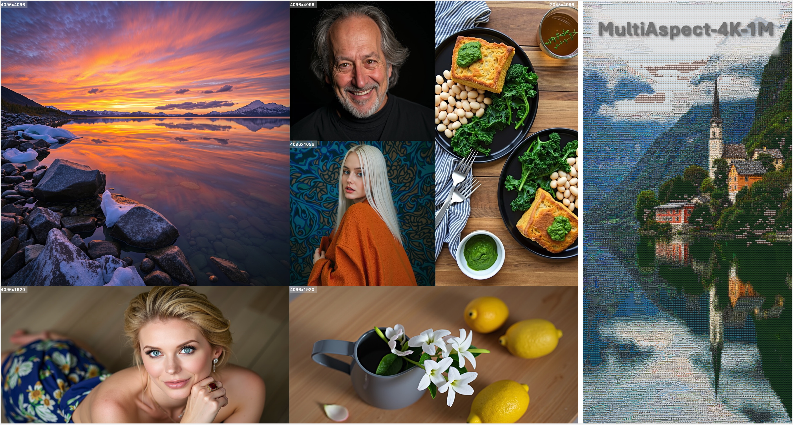

UltraFlux: Data-Model Co-Design for High-quality Native 4K Text-to-Image Generation across Diverse Aspect Ratios
*Equal Contribution ‡Project Leader †Corresponding Author
UltraFlux is a diffusion transformer that extends Flux backbones to native 4K synthesis with consistent quality across a wide range of aspect ratios.
The project unifies data, architecture, objectives, and optimization so that positional encoding, VAE compression, and loss design reinforce each other rather than compete.

UltraFlux native 4K renders spanning landscapes, portraits, food, still life, and mosaic-like artistic scenes.
Native 4K Gallery


Why UltraFlux?
- 4K positional robustness. Resonance 2D RoPE with YaRN retains training-window awareness while remaining band- and aspect-ratio aware to avoid ghosting.
- Detail-preserving compression. A lightweight, non-adversarial post-training routine sharpens Flux VAE reconstructions at 4K without sacrificing throughput.
- 4K-aware objectives. The SNR-Aware Huber Wavelet Training Objective balances gradients across timesteps and frequency bands which keeps latent space detail intact.
- Aesthetic-aware scheduling. Stage-wise Aesthetic Curriculum Learning routes high-aesthetic supervision to the high-noise steps so the model prior favors vivid details.
MultiAspect-4K-1M Dataset
- Scale and coverage. One million native and near-4K images with controlled aspect-ratio sampling cover wide, square, and portrait regimes evenly.
- Content balance. Dual-channel collection debiases landscape-heavy sources to bring in more human-centric content.
- Rich metadata. Every sample includes bilingual captions, subject tags, CLIP/VLM-based quality scores, aesthetic grades, and classic IQA metrics for targeted sampling.
Model & Training Recipe
- Backbone. Flux-style DiT trained directly on MultiAspect-4K-1M with token-efficient blocks plus Resonance 2D RoPE + YaRN for AR-aware positional encoding.
- Objective. The SNR-Aware Huber Wavelet loss aligns gradient magnitudes with 4K statistics, reinforcing high-frequency fidelity under strong VAE compression.
- Curriculum. SACL injects high-aesthetic data primarily into high-noise timesteps so the model prior captures human-desired structure early in the denoising trajectory.
- VAE Post-training. A non-adversarial fine-tuning pass boosts 4K reconstruction quality while keeping inference cost low.
Resources
We will release the full stack upon publication, including:
- MultiAspect-4K-1M dataset with metadata loaders.
- Training pipelines.
- Evaluation code covering fidelity, aesthetic, and alignment metrics.
Contact
For collaboration or questions please reach out to tye610@connect.hkust-gz.edu.cn.